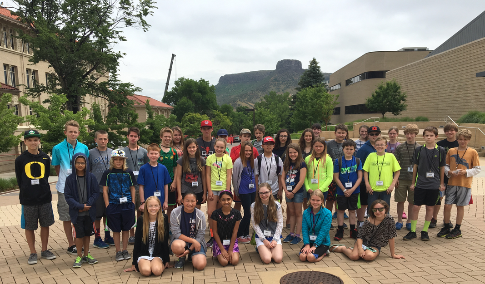

Exploring Technology
2016 Summer Camp: Computer Science
For students entering 6th, 7th, 8th, or 9th grade in Fall 2016
June 2016 Computer Science Camp
Time: 9:00am - 3:30pm
Do you want to learn how to create a video game? Do you want to develop your own stories or animations and share with others around the world? Do you want to make a robot move and tell it how to interact with our world? If you answered yes to any of these questions, then this is the summer camp for you!
Students will be introduced to computer programming by designing an interactive visual application and interfacing with the Finch robot. This course will use Greenfoot (for those with some prior coding experience) and Scratch (for those without); Greenfoot is a visual Java-based environment, while Scratch is a visual drag-n-drop environment.
NOTE: The boys and girls sessions will come together for breaks in the computer lab, including physical breaks (e.g., kick ball) and mental/kinesthetic breaks (e.g., CS Unplugged activities that teach CS fundamentals without using a computer).
Cost: $400*
Cost includes lunch in campus dining hall
*Need-based scholarships available. Please email stem-tech@mines.edu to request financial assistance.
At least five students must enroll for each session to occur. Each session will have a maximum of 16 students (2 teachers).
Click on the Register button at the top of the page to begin the registration process. Registration closes when camp fills.
For a printable flyer (pdf) of Exploring Technology 2016 Summer Camp, please click here.
Need more information? Please email us at stem-tech@mines.edu.